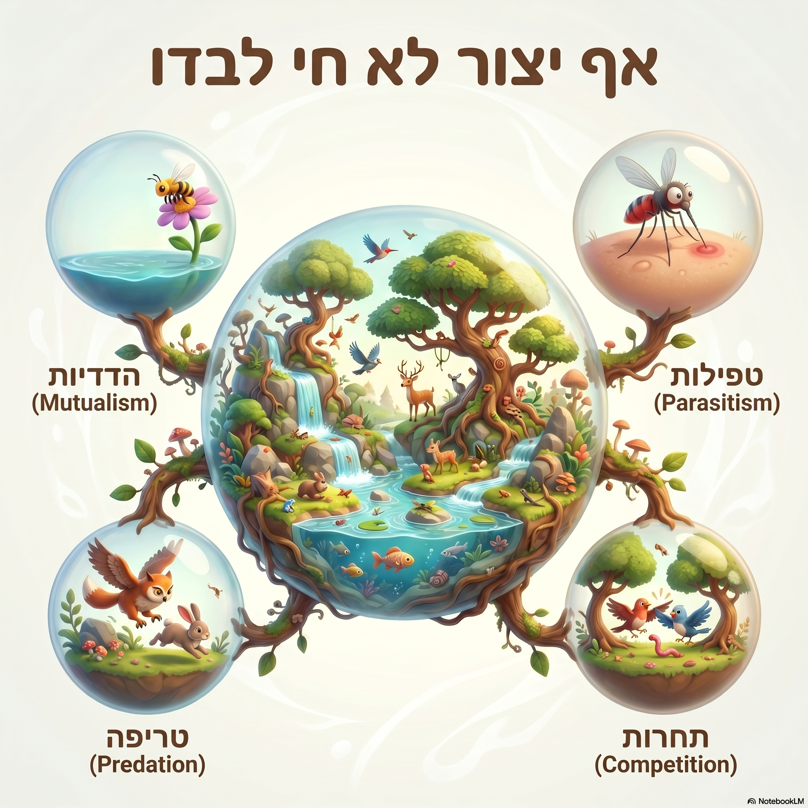

כרטיס גירוד
גרד את המשטח האפור כדי לגלות את התמונה המסתתרת!
מצוין!
הקוד לעבור לחידה הבאה הוא:
666
סגור וחזור לתמונה

הנחיה למורה:
כדי שהתמונה שלך תופיע, שמור את התמונה באותה תיקייה של קובץ זה בגיטהאב, ושנה בשורת הקוד (מספר 46) את כתובת התמונה לשם הקובץ שלך.